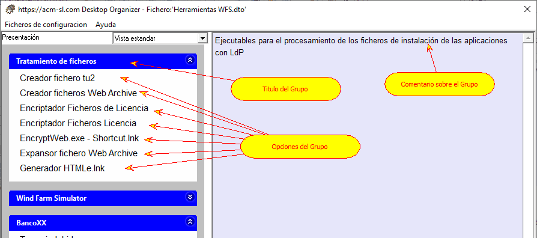

En muchos trabajos (p.e. para una reclamación legal, o durante la escritura de un libro, o para crear una tesis doctorales, etc.) es muy productivo disponer de un punto común para acceder a todos los documentos relacionados con dicho trabajo, independientemente de su localización física.
El Organizador de Escritorio usa el concepto de "Grupo" para esta funcionalidad. En la figura siguiente se muestra una configuración ("Herramientas WFS.dto") que tiene tres grupos; el primero ("Tratamiento de ficheros") está desplegado mostrando las Opciones que tiene asociadas (panel izquierdo), mientras en el panel derecho se muestra el comentario asociado al grupo.
